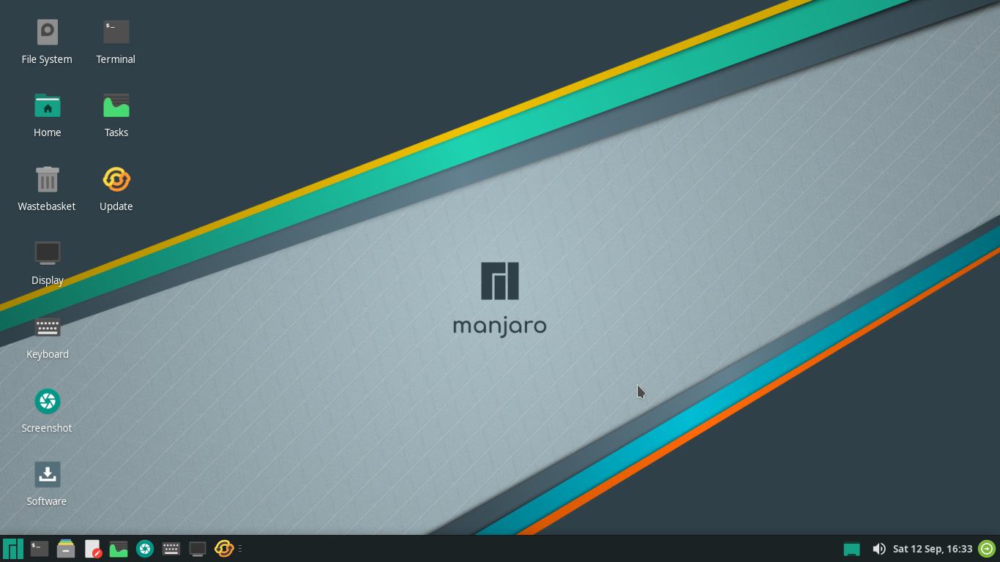
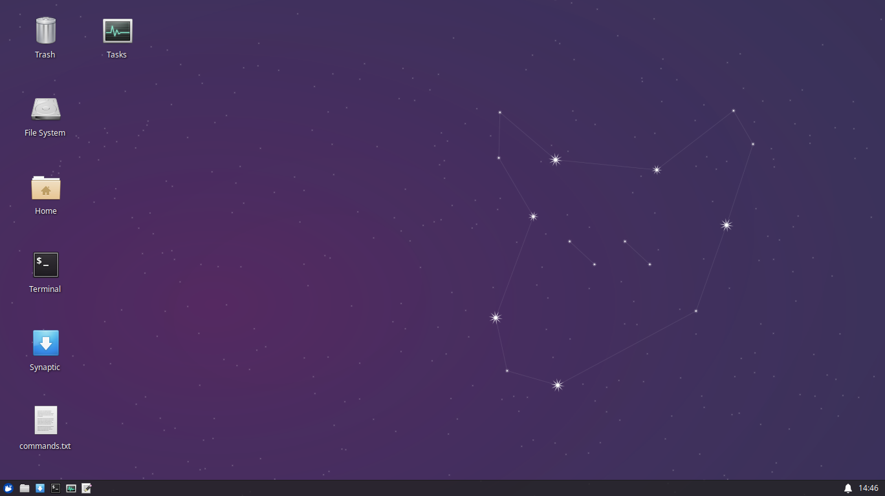
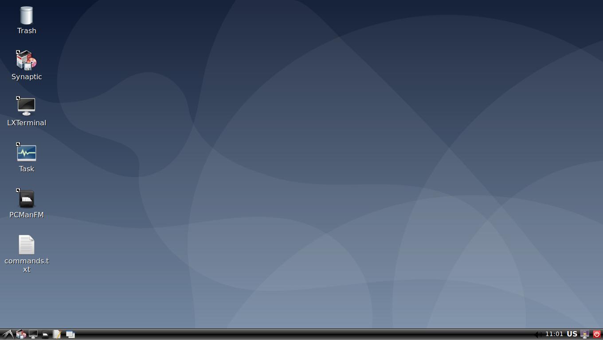
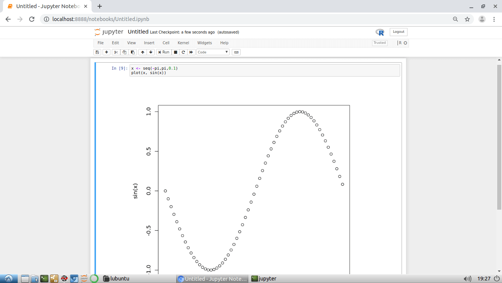
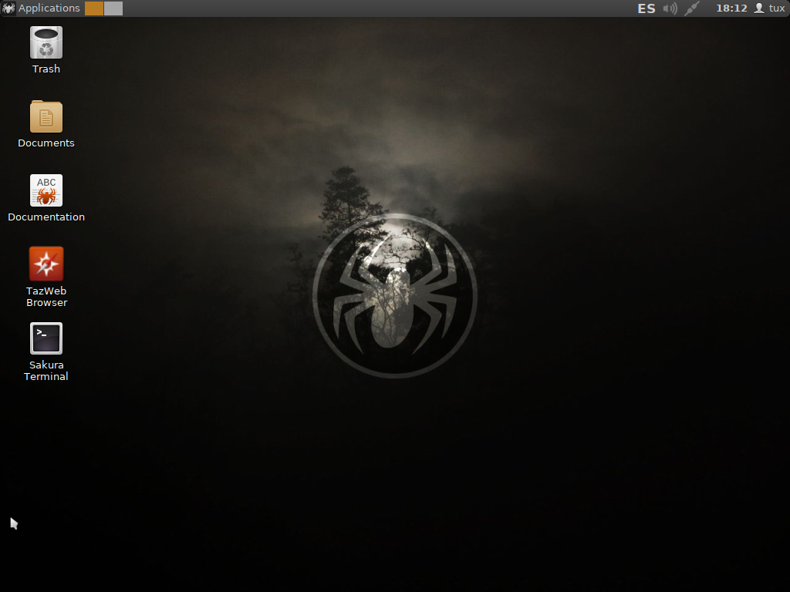

Virtual Machines
Virtual Machines
Virtual Machines contains VirtualBox OVA files and tutorials. Simplifies developers configuration work through lightweight and powerful environments

Manjaro 21.0 XFCE Minimal
- Manjaro with Linux Kernel 5.4 LTS
- VirtualBox Guest Additions
- Pamac package manager (pacman frontend) with Official Repos + AUR
- Basic python http server included. Example: python -m http.server 8080
- It can be used as a base of development environments, to test software...
- User and pass of system is the same: manjaro
DOWNLOAD

Xubuntu Focal 20.04.2 Minimal
- Xubuntu with Linux Kernel 5.4
- VirtualBox Guest Additions
- Synaptic package manager
- Basic python http server included. Example: python3 -m http.server 8080
- It can be used as a base of development environments, to test software...
- User and pass of system is the same: xubuntu
DOWNLOAD

Debian 10 Virtual Machine
- Linux Kernel 4.19
- VirtualBox Guest Additions
- Synaptic package manager
- Basic python http server included. Example: python3 -m http.server 8080
- It can be used as a base of development environments, to test software...
- User and pass of system is the same: debian
DOWNLOAD

Java Environment: Spring MVC Maven project and virtual machine
- OpenJDK 8
- Eclipse 4.14 (2019-12) Java EE with Maven, Gradle, JPA, JSF, Mylyn and Egit
- JasperSoft Studio Community (JasperReports) as Eclipse plugin
- SonarLint (real-time code audit) as Eclipse plugin
- Subclipse (SVN Team Provider) as Eclipse plugin
- User/pass is the same: lubuntu
- Postgresql pass: postgres
DOWNLOAD

Anaconda Python 3 and R Distribution
- Anaconda 3 distribution with tons of data science and big data libraries
- With Conda (package manager) you can add more software
- Anaconda Navigator allows you to launch apps easily and install new ones
- IPython
- Spyder IDE
- Jupyter notebook server
- User/pass is the same: lubuntu
DOWNLOAD

Lubuntu Bionic 18.04.5 virtual machine
- Linux Kernel 5.4 HWE (Hardware Enablement)
- VirtualBox Guest Additions
- Synaptic package manager
- Basic python http server included. Example: python3 -m http.server 8080
- Command-line download manager: wget
- It can be used as a base of development environments, to test software...
- User/pass is the same: lubuntu
DOWNLOAD

Angular 8 with Visual Studio Code and StackBlitz
- Chromium browser with Angular.io website and MyApp bookmarks
- Visual Studio Code + Angular tutorial as bookmark
- npm (Nodejs included)
- Angular CLI globally installed (Angular 8.0.2): npm install -g @angular/cli
- Includes a sample project (my-app) created with: ng new my-app
- Visual Studio Code with the sample project (my-app) opened
- User/pass is the same: lubuntu
DOWNLOAD

ReactOS
- ReactOS 0.4.15 dev virtual machine with VirtualBox Guest Additions installed
- Experimental (alpha state), free and open-source operating system
- For amd64/i686 personal computers
- Intended to be binary-compatible with Windows Server 2003 and later versions
- OVA file less than 200MB
DOWNLOAD

PRO1 and PRO2 FIB UPC development environment
- C++ programming language through g++ compiler with p1 and p2 flags
- Kate and Konsole updated and properly configured
- Doxygen, the documentation generator. Use "doxygen -g" to create a DoxyFile
- Chromium browser with Jutge.org, PRO1 and PRO2 websites bookmarks
- User/pass is the same: lubuntu
DOWNLOAD

LubuMaster is a distribution that builds a custom Lubuntu
- Based on Minimal Lubuntu Bionic
- Linux Kernel 5 HWE (Hardware Enablement)
- VirtualBox Guest Additions
- Pinguy Builder
- User/pass is the same: lubuntu
DOWNLOAD OVA
DOWNLOAD ISO

RStudio development environment in a virtual machine
- Linux Kernel 4.18
- VirtualBox Guest Additions
- R command line (r-base package)
- RStudio Desktop Free edition
- User/pass is the same: lubuntu
DOWNLOAD

SliTaz in a virtual machine
- StiTaz is a very simple and lightweight Linux distribution
- OVA file less than 100MB
DOWNLOAD

Tomcat 9 with JRE 8 in a virtual machine
- JRE of OpenJDK8 and Tomcat 9.0.17 that starts on boot
- User/pass is the same: lubuntu
DOWNLOAD

Qt Creator Community IDE in a virtual machine
- Mesa Utils (glxinfo, glxgears...)
- Qt 5 and Qt Creator Community IDE
- CMake, qmake, g++, gcc and GDB
- User/pass is the same: lubuntu
DOWNLOAD
Import OVA VirtualBox step by step. This is useful to work easily with virtual machines
- File -> Import Appliance (or Control + I)
- Appliance to import dialog is shown
- Click on upload button and select file
- Selected file path is shown. Click Next
- You can modify settings like RAM (optional) and click Import
- Wait until import finishes
- Run your imported machine with Start button
NAT Port Forwarding VirtualBox. How to access to a guest served website from host
- Click on Settings when a virtual machine is selected
- Go to Network tab
- Click on Advanced -> Port Forwarding button
- Add a new rule using right green plus (+ icon)
- Set host and guest ports (IP are optional and not needed on localhost) and click OK button
- Serve a web application on guest using the port previously configured as “Guest Port”. Example: python3 -m http.server 8080
- Finally, enter on a host web browser using “Host port” of localhost. Example: localhost:8080
Shared Folders VirtualBox. How to transfer files between host and guest
- Click on Settings
- Go to Shared Folders tab and click right green plus button
- Select Folder Path on host using arrow or type it manually.
- Set Folder name. Check Auto-mount. Click OK.
- Click OK
- Click on Start to run your machine with a shared folder